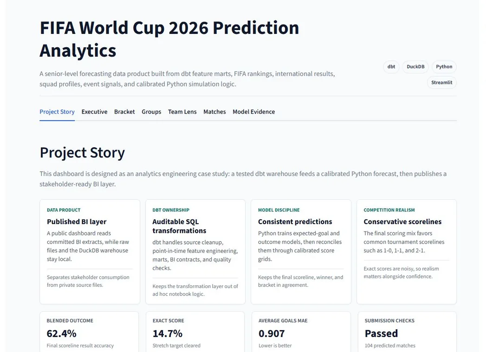

Reliable analytical layers
SQL-based pipelines, reusable metric logic, dashboard data models, and validation routines for recurring reporting.
analytics, consulting, dashboards, and automation
pipelines, data validation, modeling, and executive BI
metric layers, stakeholder training, and recurring delivery
Current focus
SQL-based pipelines, reusable metric logic, dashboard data models, and validation routines for recurring reporting.
Executive dashboards, concise performance narratives, documentation, and training for technical and non-technical teams.
dbt-style modeling, orchestration, tests, lineage, and domain-specific analytics projects are the next public artifacts.
Experience
Build SQL-based analytics pipelines, Power BI dashboards, and recurring reporting workflows across operational, procurement, and financial datasets.
Developed automated SQL workflows, process automations, and Neo4j graph models for fraud, risk, and relationship analysis.
Studied bioinformatics and competed as a Division I men's basketball athlete, pairing technical training with team-first execution.
Projects

A public forecasting dashboard backed by a reproducible analytics pipeline that turns soccer data into tested features, tournament predictions, and dashboard-ready outputs.
A live FP20 Analytics challenge focused on emergency operations, patient flow, hospital capacity, staffing pressure, and leadership-ready recommendations for care delivery.
Ticketing and event-demand models for sell-through, gross ticket value, repeat purchase, venue performance, and buyer conversion.
Skills
SQL, Python, R, Cypher
ETL/ELT, data modeling, validation, QA, documentation, dbt coursework
Power BI, Tableau, executive dashboards, metric definitions, training
Federal finance, procurement, operational analytics, fraud and risk graphs
Contact
Especially the kind where clean metric logic, thoughtful automation, and patient stakeholder delivery matter.